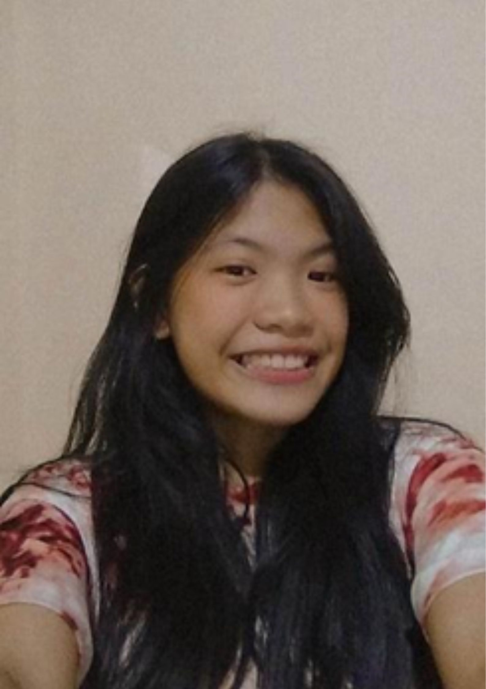

ACTIVITY 1: WHO ARE YOU?
The world is not fair; there are people who will treat you kindly, but there are people who will treat you badly. That’s why I believe that we should always treat people with kindness because we all go through different things in life,and the least we can do for them is to treat them kindly.
They said, “You only live once; live your life to the fullest.” That’s why, whenever I get the chance, if I want to do something that scares me, I always try it, even if I’m afraid. I don’t want to look back and be sorry that I didn’t do it because there are so many things that I missed just because I was afraid, and I don’t want to be like that again. I’d rather face my fears than live with regrets.

I share common interests with other people, such as eating, sleeping, and keeping up with social media trends. I can’t say what makes me different from other people because there are people who think the same way or have the same perspective on life, and there are billions of people in the world, so I can’t say what makes me different from them, but maybe if there is a difference, it’s that I am Krizia Doblas, I am my own person, and I don’t pretend to be someone else.
My little accomplishment in life right now is being able to commute on my own because I didn’t know how to commute before and was terrified. I also learned how to order at any fast-food restaurant on my own. I used to be nervous and agitated; I used to have to memorize what I wanted to order, but now I order without hesitation. Most importantly, I gained confidence. I can’t say that I’m no longer the shy type, but I know that I’ve improved a lot.
Honestly, I still don’t know what kind of job I want to do in the future, but my future plans include building my own house, having my own car, taking care of animals that I want to take care of, and of course, traveling round the world and tasting good food in every country I visit.
My social media accounts: